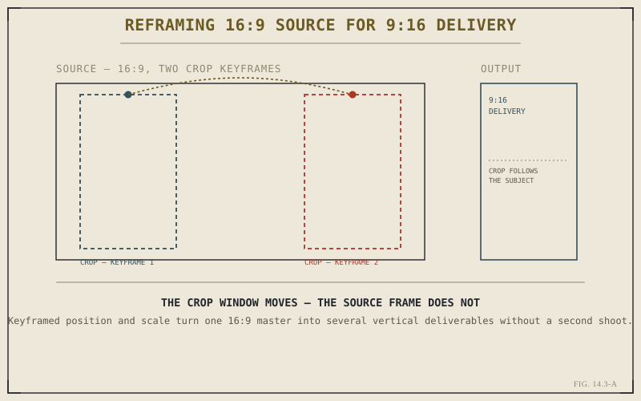

Chapter 14.2 measured documentary work in hundreds of hours. This chapter measures its subject in seconds. Social and vertical-format editing isn't a smaller version of anything covered so far — it's shaped by a genuinely different set of constraints, starting with a frame orientation most of this book has quietly assumed away, and continuing through a pacing and delivery logic built around a platform rather than a story.
A Different Canvas, Set Before the First Cut
Every earlier example in this book has assumed a horizontal, 16:9 frame without saying so. Vertical delivery breaks that assumption at the project level, not the edit level — Chapter 2.7 already flagged timeline resolution as a setting that actually matters, and this is exactly the situation it was warning about. Setting a project or timeline to a 9:16 or 1:1 resolution before cutting begins, rather than reformatting afterward, keeps every framing decision honest to the canvas it will actually be viewed on.
Reframing Footage You Didn't Shoot Vertically
Most social content still originates from horizontal source material, which means the practical daily task isn't shooting vertical, it's reframing into it — choosing which slice of a wider frame to show, and letting that choice move over the course of a shot rather than sitting fixed. This is keyframing exactly as Chapter 7.5 described it, applied to a clip's position and zoom instead of a title's: one keyframe for where the crop starts, another for where it ends, with Resolve interpolating everything in between into a smooth reframe that follows the subject across a frame it was never composed for.

The source frame stays fixed; only the crop window keyframes across it.
Titles and Captions for a Screen Held in One Hand
Text behaves differently at social scale than it does in the rest of this book's examples. Chapter 7.3's Text+ and template titles are still the right tools, but the sizing and placement logic changes: captions need to read at a glance on a small screen, often muted by default, which means burned-in text frequently carries information a soundtrack normally would. Safe margins matter more here too, since platform interfaces routinely cover the bottom and top edges of a vertical frame with their own controls.
Vertical editing isn't horizontal editing shrunk down. The frame is different, the sound is often optional rather than assumed, and the first fraction of a second has to do work no shot in a feature-length timeline is ever asked to do alone.
Pacing Built Around a Hook
Retention on short-form platforms is won or lost in the opening seconds, which pushes pacing toward speed in a way even documentary work rarely demands. This is precisely the territory Chapter 5.7 was preparing you for — the gap between knowing JKL and being fast with it becomes directly visible here, since a cut every few frames, sustained across dozens of short deliverables a week, simply isn't sustainable through slow, deliberate mouse work.
One Timeline, Several Deliverables
It's common for the same core edit to need to exist in more than one aspect ratio and length for different platforms. Chapter 4.6's compound clips and Chapter 4.7's nested timelines are the practical answer: building the core edit once as a nested sequence, then wrapping platform-specific reframing, titles, and trims around that shared nest for each version, rather than rebuilding the cut from scratch for every destination.
That's the discipline this format actually demands: a canvas chosen deliberately, reframing built on keyframing already covered, text designed for a muted, small screen, and pacing fast enough to survive a few seconds of attention. Chapter 14.4 moves to the opposite constraint entirely — broadcast and long-form delivery, where the canvas is fixed, the pacing is unhurried, and the real challenge is technical compliance rather than platform retention.
Key Concepts to Remember
- Vertical delivery is a project-level decision, not a reformat — set timeline resolution deliberately, as Chapter 2.7 recommends.
- Reframing horizontal source into a vertical crop is Chapter 7.5's keyframing capability, applied to position and zoom instead of a title.
- Captions and safe margins need to account for muted playback and platform interface overlays a horizontal frame never had to consider.
- Nested timelines and compound clips from Chapter 4.6 and 4.7 let one core edit produce several platform-specific deliverables efficiently.
Cross-References Forward
| → Ch. 14.4 | Broadcast and Long-Form Delivery Workflow — a fixed canvas and unhurried pacing, the near-opposite of this chapter's constraints. |
| → Ch. 7.5 | Revisit keyframing, the mechanism underneath every reframed, subject-following vertical crop. |
| → Ch. 2.7 | Revisit project settings, including timeline resolution, before committing to a vertical or square canvas. |